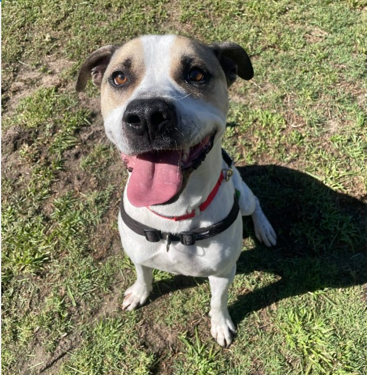

Un nuevo hogar para Luna
Luna fue rescatada de las calles por nuestro equipo de voluntarios. Cuando llegó al refugio estaba asustada, débil y desconfiada. Con paciencia, amor y cuidados médicos, poco a poco volvió a confiar en las personas.
Después de varios meses, Luna conoció a su nueva familia adoptiva durante una jornada de adopción organizada por MascotAR. Hoy vive feliz en su nuevo hogar, rodeada de cariño y con un jardín donde puede correr y jugar todos los días.
Historias como la de Luna son las que nos motivan a seguir trabajando. ¡Gracias a todos los que colaboran para que más animales encuentren un hogar!
← Volver a Prensa